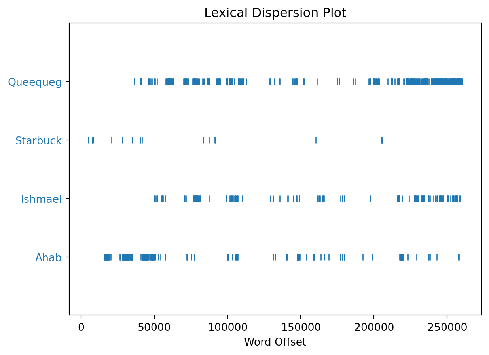
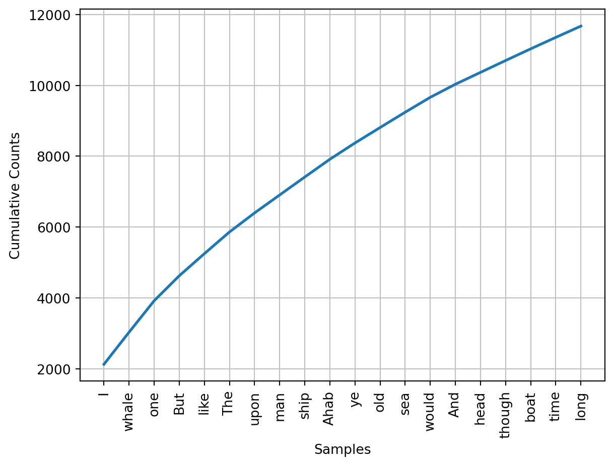

import nltk11 Advanced Topics
11.1 Text Analysis with nltk
11.1.1 Introduction
nltk, or Natural Language Toolkit, is a Python package which provides a set of tools for text analysis. nltk is used in Natural Language Processing (NLP), a field of computer science which focuses on the interaction between computers and human languages. nltk is a very powerful tool for text analysis, and is used by many researchers and data scientists. In this tutorial, we will learn how to use nltk to analyze text.
11.1.2 Getting Started
First, we must install nltk using pip.
python -m pip install nltk
Necessary datasets/models are needed for specific functions to work. We can download a popular subset with
python -m nltk.downloader popular
11.1.3 Tokenizing
To analyze text, it needs to be broken down into smaller pieces. This is called tokenization. nltk offers two ways to tokenize text: sentence tokenization and word tokenization.
To demonstrate this, we will use the following text, a passage from the 1951 science fiction novel Foundation by Isaac Asimov.
fd_string = """The sum of human knowing is beyond any one man; any thousand men. With the destruction of our social fabric, science will be broken into a million pieces. Individuals will know much of exceedingly tiny facets of what there is to know. They will be helpless and useless by themselves. The bits of lore, meaningless, will not be passed on. They will be lost through the generations. But, if we now prepare a giant summary of all knowledge, it will never be lost. Coming generations will build on it, and will not have to rediscover it for themselves. One millennium will do the work of thirty thousand."""11.1.3.1 Sentence Tokenization
from nltk import sent_tokenize, word_tokenize
# nltk.download("popular") # only needs to download once
fd_sent = sent_tokenize(fd_string)
print(fd_sent)['The sum of human knowing is beyond any one man; any thousand men.', 'With the destruction of our social fabric, science will be broken into a million pieces.', 'Individuals will know much of exceedingly tiny facets of what there is to know.', 'They will be helpless and useless by themselves.', 'The bits of lore, meaningless, will not be passed on.', 'They will be lost through the generations.', 'But, if we now prepare a giant summary of all knowledge, it will never be lost.', 'Coming generations will build on it, and will not have to rediscover it for themselves.', 'One millennium will do the work of thirty thousand.']11.1.3.2 Word Tokenization
fd_word = word_tokenize(fd_string)
print(fd_word)['The', 'sum', 'of', 'human', 'knowing', 'is', 'beyond', 'any', 'one', 'man', ';', 'any', 'thousand', 'men', '.', 'With', 'the', 'destruction', 'of', 'our', 'social', 'fabric', ',', 'science', 'will', 'be', 'broken', 'into', 'a', 'million', 'pieces', '.', 'Individuals', 'will', 'know', 'much', 'of', 'exceedingly', 'tiny', 'facets', 'of', 'what', 'there', 'is', 'to', 'know', '.', 'They', 'will', 'be', 'helpless', 'and', 'useless', 'by', 'themselves', '.', 'The', 'bits', 'of', 'lore', ',', 'meaningless', ',', 'will', 'not', 'be', 'passed', 'on', '.', 'They', 'will', 'be', 'lost', 'through', 'the', 'generations', '.', 'But', ',', 'if', 'we', 'now', 'prepare', 'a', 'giant', 'summary', 'of', 'all', 'knowledge', ',', 'it', 'will', 'never', 'be', 'lost', '.', 'Coming', 'generations', 'will', 'build', 'on', 'it', ',', 'and', 'will', 'not', 'have', 'to', 'rediscover', 'it', 'for', 'themselves', '.', 'One', 'millennium', 'will', 'do', 'the', 'work', 'of', 'thirty', 'thousand', '.']Both the sentence tokenization and word tokenization functions return a list of strings. We can use these lists to perform further analysis.
11.1.4 Removing Stopwords
The output of the word tokenization gave us a list of words. However, some of these words are not useful for our analysis. These words are called stopwords. nltk provides a list of stopwords for several languages. We can use this list to remove stopwords from our text.
from nltk.corpus import stopwords
stop_words = set(stopwords.words("english"))
print(stop_words){'doing', 'both', 'didn', 'few', 'were', 'under', 'in', 'aren', 'up', "mustn't", 'off', 'at', 'o', 'isn', 'below', 'own', 'very', 'nor', 'and', 'between', 'yourself', 'being', 'no', 'should', 'are', "you'd", 'she', 'but', 'of', "mightn't", 'each', 'such', 'further', 'ourselves', 'do', "aren't", 'hers', 'have', 'is', 'himself', 'am', 'the', 'having', 'after', 'don', 'was', 'more', 'it', 'can', 'an', 'wouldn', "weren't", 'on', 'y', 'once', 'only', 'why', 'its', 'now', 'those', 'a', 'because', "don't", 'weren', 'above', 'yours', 'his', 've', 'you', "it's", "won't", 'whom', 'be', "wouldn't", 'them', 'how', 'just', "you'll", "that'll", 'when', 'themselves', 'shouldn', 'wasn', 'same', 'ma', 'won', 'again', 're', "doesn't", 'itself', 'he', 'other', 'll', 'to', 'mustn', 'their', 'what', 'hadn', 'then', 'haven', 'doesn', 't', 'for', 'ain', "she's", 'your', 'any', 'most', 'so', 'theirs', 'hasn', 'some', "haven't", 'too', 's', "hasn't", 'mightn', 'has', "shan't", 'while', 'will', 'our', 'd', 'her', 'couldn', 'until', 'where', 'there', 'herself', 'did', 'through', 'against', "needn't", 'or', 'had', 'which', 'yourselves', 'that', 'down', 'with', 'm', "you've", 'about', 'than', 'shan', 'these', "didn't", 'needn', "you're", 'here', 'before', 'my', 'this', 'into', 'all', 'ours', 'from', 'not', 'if', 'him', 'myself', 'me', "wasn't", 'who', "should've", "couldn't", 'i', 'during', "isn't", "shouldn't", 'over', 'they', 'does', 'by', 'as', 'been', "hadn't", 'we', 'out'}fd_filtered = [w for w in fd_word if w.casefold() not in stop_words]
print(fd_filtered)['sum', 'human', 'knowing', 'beyond', 'one', 'man', ';', 'thousand', 'men', '.', 'destruction', 'social', 'fabric', ',', 'science', 'broken', 'million', 'pieces', '.', 'Individuals', 'know', 'much', 'exceedingly', 'tiny', 'facets', 'know', '.', 'helpless', 'useless', '.', 'bits', 'lore', ',', 'meaningless', ',', 'passed', '.', 'lost', 'generations', '.', ',', 'prepare', 'giant', 'summary', 'knowledge', ',', 'never', 'lost', '.', 'Coming', 'generations', 'build', ',', 'rediscover', '.', 'One', 'millennium', 'work', 'thirty', 'thousand', '.']The resulting list is significantly shorter. There are some words that nltk considers stopwords that we may want to keep, depending on the objective of our analysis. Reducing the size of our data can help us to reduce the time it takes to perform our analysis. However, removing too many words can reduce the accuracy, which is especially important when we are trying to perform sentiment analysis.
11.1.5 Stemming
Stemming is a method which allows us to reduce the number of variants of a word. For example, the words connecting, connected, and connection are all variants of the same word connect. nltk includes a few different stemmers based on different algorithms. We will use the Snowball stemmer, an improved version of the 1979 Porter stemmer.
from nltk.stem.snowball import SnowballStemmer
snow_stem = SnowballStemmer(language='english')
fd_stem = [snow_stem.stem(w) for w in fd_word]
print(fd_stem)['the', 'sum', 'of', 'human', 'know', 'is', 'beyond', 'ani', 'one', 'man', ';', 'ani', 'thousand', 'men', '.', 'with', 'the', 'destruct', 'of', 'our', 'social', 'fabric', ',', 'scienc', 'will', 'be', 'broken', 'into', 'a', 'million', 'piec', '.', 'individu', 'will', 'know', 'much', 'of', 'exceed', 'tini', 'facet', 'of', 'what', 'there', 'is', 'to', 'know', '.', 'they', 'will', 'be', 'helpless', 'and', 'useless', 'by', 'themselv', '.', 'the', 'bit', 'of', 'lore', ',', 'meaningless', ',', 'will', 'not', 'be', 'pass', 'on', '.', 'they', 'will', 'be', 'lost', 'through', 'the', 'generat', '.', 'but', ',', 'if', 'we', 'now', 'prepar', 'a', 'giant', 'summari', 'of', 'all', 'knowledg', ',', 'it', 'will', 'never', 'be', 'lost', '.', 'come', 'generat', 'will', 'build', 'on', 'it', ',', 'and', 'will', 'not', 'have', 'to', 'rediscov', 'it', 'for', 'themselv', '.', 'one', 'millennium', 'will', 'do', 'the', 'work', 'of', 'thirti', 'thousand', '.']Stemming algorithms are susceptible to errors. Related words that should share a stem may not, which is known as understemming, which is a false negative. Unrelated words that should not share a stem may, which is known as overstemming, which is a false positive.
11.1.6 POS Tagging
nltk also enables us to label the parts of speech of each word in a text. This is known as part-of-speech (POS) tagging. nltk uses the Penn Treebank tagset, which is a set of tags that are used to label words in a text. The tags are as follows:
nltk.help.upenn_tagset()$: dollar
$ -$ --$ A$ C$ HK$ M$ NZ$ S$ U.S.$ US$
'': closing quotation mark
' ''
(: opening parenthesis
( [ {
): closing parenthesis
) ] }
,: comma
,
--: dash
--
.: sentence terminator
. ! ?
:: colon or ellipsis
: ; ...
CC: conjunction, coordinating
& 'n and both but either et for less minus neither nor or plus so
therefore times v. versus vs. whether yet
CD: numeral, cardinal
mid-1890 nine-thirty forty-two one-tenth ten million 0.5 one forty-
seven 1987 twenty '79 zero two 78-degrees eighty-four IX '60s .025
fifteen 271,124 dozen quintillion DM2,000 ...
DT: determiner
all an another any both del each either every half la many much nary
neither no some such that the them these this those
EX: existential there
there
FW: foreign word
gemeinschaft hund ich jeux habeas Haementeria Herr K'ang-si vous
lutihaw alai je jour objets salutaris fille quibusdam pas trop Monte
terram fiche oui corporis ...
IN: preposition or conjunction, subordinating
astride among uppon whether out inside pro despite on by throughout
below within for towards near behind atop around if like until below
next into if beside ...
JJ: adjective or numeral, ordinal
third ill-mannered pre-war regrettable oiled calamitous first separable
ectoplasmic battery-powered participatory fourth still-to-be-named
multilingual multi-disciplinary ...
JJR: adjective, comparative
bleaker braver breezier briefer brighter brisker broader bumper busier
calmer cheaper choosier cleaner clearer closer colder commoner costlier
cozier creamier crunchier cuter ...
JJS: adjective, superlative
calmest cheapest choicest classiest cleanest clearest closest commonest
corniest costliest crassest creepiest crudest cutest darkest deadliest
dearest deepest densest dinkiest ...
LS: list item marker
A A. B B. C C. D E F First G H I J K One SP-44001 SP-44002 SP-44005
SP-44007 Second Third Three Two * a b c d first five four one six three
two
MD: modal auxiliary
can cannot could couldn't dare may might must need ought shall should
shouldn't will would
NN: noun, common, singular or mass
common-carrier cabbage knuckle-duster Casino afghan shed thermostat
investment slide humour falloff slick wind hyena override subhumanity
machinist ...
NNP: noun, proper, singular
Motown Venneboerger Czestochwa Ranzer Conchita Trumplane Christos
Oceanside Escobar Kreisler Sawyer Cougar Yvette Ervin ODI Darryl CTCA
Shannon A.K.C. Meltex Liverpool ...
NNPS: noun, proper, plural
Americans Americas Amharas Amityvilles Amusements Anarcho-Syndicalists
Andalusians Andes Andruses Angels Animals Anthony Antilles Antiques
Apache Apaches Apocrypha ...
NNS: noun, common, plural
undergraduates scotches bric-a-brac products bodyguards facets coasts
divestitures storehouses designs clubs fragrances averages
subjectivists apprehensions muses factory-jobs ...
PDT: pre-determiner
all both half many quite such sure this
POS: genitive marker
' 's
PRP: pronoun, personal
hers herself him himself hisself it itself me myself one oneself ours
ourselves ownself self she thee theirs them themselves they thou thy us
PRP$: pronoun, possessive
her his mine my our ours their thy your
RB: adverb
occasionally unabatingly maddeningly adventurously professedly
stirringly prominently technologically magisterially predominately
swiftly fiscally pitilessly ...
RBR: adverb, comparative
further gloomier grander graver greater grimmer harder harsher
healthier heavier higher however larger later leaner lengthier less-
perfectly lesser lonelier longer louder lower more ...
RBS: adverb, superlative
best biggest bluntest earliest farthest first furthest hardest
heartiest highest largest least less most nearest second tightest worst
RP: particle
aboard about across along apart around aside at away back before behind
by crop down ever fast for forth from go high i.e. in into just later
low more off on open out over per pie raising start teeth that through
under unto up up-pp upon whole with you
SYM: symbol
% & ' '' ''. ) ). * + ,. < = > @ A[fj] U.S U.S.S.R * ** ***
TO: "to" as preposition or infinitive marker
to
UH: interjection
Goodbye Goody Gosh Wow Jeepers Jee-sus Hubba Hey Kee-reist Oops amen
huh howdy uh dammit whammo shucks heck anyways whodunnit honey golly
man baby diddle hush sonuvabitch ...
VB: verb, base form
ask assemble assess assign assume atone attention avoid bake balkanize
bank begin behold believe bend benefit bevel beware bless boil bomb
boost brace break bring broil brush build ...
VBD: verb, past tense
dipped pleaded swiped regummed soaked tidied convened halted registered
cushioned exacted snubbed strode aimed adopted belied figgered
speculated wore appreciated contemplated ...
VBG: verb, present participle or gerund
telegraphing stirring focusing angering judging stalling lactating
hankerin' alleging veering capping approaching traveling besieging
encrypting interrupting erasing wincing ...
VBN: verb, past participle
multihulled dilapidated aerosolized chaired languished panelized used
experimented flourished imitated reunifed factored condensed sheared
unsettled primed dubbed desired ...
VBP: verb, present tense, not 3rd person singular
predominate wrap resort sue twist spill cure lengthen brush terminate
appear tend stray glisten obtain comprise detest tease attract
emphasize mold postpone sever return wag ...
VBZ: verb, present tense, 3rd person singular
bases reconstructs marks mixes displeases seals carps weaves snatches
slumps stretches authorizes smolders pictures emerges stockpiles
seduces fizzes uses bolsters slaps speaks pleads ...
WDT: WH-determiner
that what whatever which whichever
WP: WH-pronoun
that what whatever whatsoever which who whom whosoever
WP$: WH-pronoun, possessive
whose
WRB: Wh-adverb
how however whence whenever where whereby whereever wherein whereof why
``: opening quotation mark
` ``We can use the function nltk.pos_tag() on our list of tokenized words. This will return a list of tuples, where each tuple contains a word and its corresponding tag.
fd_tag = nltk.pos_tag(fd_word)
print(fd_tag)[('The', 'DT'), ('sum', 'NN'), ('of', 'IN'), ('human', 'JJ'), ('knowing', 'NN'), ('is', 'VBZ'), ('beyond', 'IN'), ('any', 'DT'), ('one', 'CD'), ('man', 'NN'), (';', ':'), ('any', 'DT'), ('thousand', 'CD'), ('men', 'NNS'), ('.', '.'), ('With', 'IN'), ('the', 'DT'), ('destruction', 'NN'), ('of', 'IN'), ('our', 'PRP$'), ('social', 'JJ'), ('fabric', 'NN'), (',', ','), ('science', 'NN'), ('will', 'MD'), ('be', 'VB'), ('broken', 'VBN'), ('into', 'IN'), ('a', 'DT'), ('million', 'CD'), ('pieces', 'NNS'), ('.', '.'), ('Individuals', 'NNS'), ('will', 'MD'), ('know', 'VB'), ('much', 'RB'), ('of', 'IN'), ('exceedingly', 'RB'), ('tiny', 'JJ'), ('facets', 'NNS'), ('of', 'IN'), ('what', 'WP'), ('there', 'EX'), ('is', 'VBZ'), ('to', 'TO'), ('know', 'VB'), ('.', '.'), ('They', 'PRP'), ('will', 'MD'), ('be', 'VB'), ('helpless', 'JJ'), ('and', 'CC'), ('useless', 'JJ'), ('by', 'IN'), ('themselves', 'PRP'), ('.', '.'), ('The', 'DT'), ('bits', 'NNS'), ('of', 'IN'), ('lore', 'NN'), (',', ','), ('meaningless', 'NN'), (',', ','), ('will', 'MD'), ('not', 'RB'), ('be', 'VB'), ('passed', 'VBN'), ('on', 'IN'), ('.', '.'), ('They', 'PRP'), ('will', 'MD'), ('be', 'VB'), ('lost', 'VBN'), ('through', 'IN'), ('the', 'DT'), ('generations', 'NNS'), ('.', '.'), ('But', 'CC'), (',', ','), ('if', 'IN'), ('we', 'PRP'), ('now', 'RB'), ('prepare', 'VBP'), ('a', 'DT'), ('giant', 'JJ'), ('summary', 'NN'), ('of', 'IN'), ('all', 'DT'), ('knowledge', 'NN'), (',', ','), ('it', 'PRP'), ('will', 'MD'), ('never', 'RB'), ('be', 'VB'), ('lost', 'VBN'), ('.', '.'), ('Coming', 'VBG'), ('generations', 'NNS'), ('will', 'MD'), ('build', 'VB'), ('on', 'IN'), ('it', 'PRP'), (',', ','), ('and', 'CC'), ('will', 'MD'), ('not', 'RB'), ('have', 'VB'), ('to', 'TO'), ('rediscover', 'VB'), ('it', 'PRP'), ('for', 'IN'), ('themselves', 'PRP'), ('.', '.'), ('One', 'CD'), ('millennium', 'NN'), ('will', 'MD'), ('do', 'VB'), ('the', 'DT'), ('work', 'NN'), ('of', 'IN'), ('thirty', 'JJ'), ('thousand', 'NN'), ('.', '.')]The tokenized words from the quote should be easy to tag correctly. The function may encounter difficulty with less conventional words (e.g. Old English), but it will attempt to tag based on context.
11.1.7 Lemmatizing
Lemmatizing is similar to stemming, but it is more accurate. Lemmatizing is a process which reduces words to their lemma, which is the base form of a word.nltk includes a lemmatizer based on the WordNet database. We can demonstrate this using a quote from the 1868 novel Little Women by Louisa May Alcott.
from nltk.stem import WordNetLemmatizer
lemmatizer = WordNetLemmatizer()
quote = "The dim, dusty room, with the busts staring down from the tall book-cases, the cosy chairs, the globes, and, best of all, the wilderness of books, in which she could wander where she liked, made the library a region of bliss to her."
quote_token = word_tokenize(quote)
quote_lemma = [lemmatizer.lemmatize(w) for w in quote_token]
print(quote_lemma)['The', 'dim', ',', 'dusty', 'room', ',', 'with', 'the', 'bust', 'staring', 'down', 'from', 'the', 'tall', 'book-cases', ',', 'the', 'cosy', 'chair', ',', 'the', 'globe', ',', 'and', ',', 'best', 'of', 'all', ',', 'the', 'wilderness', 'of', 'book', ',', 'in', 'which', 'she', 'could', 'wander', 'where', 'she', 'liked', ',', 'made', 'the', 'library', 'a', 'region', 'of', 'bliss', 'to', 'her', '.']11.1.8 Chunking/Chinking
While tokenizing allows us to distinguish individual words and sentences within a larger body of text, Chunking allows us to identify phrases based on grammar we specify.
#nltk.download("averaged_perceptron_tagger")
quote_tag = nltk.pos_tag(quote_token)We can then name grammar rules to apply to the text. These use regular expressions, which are listed below:
| Operator | Behavior |
| . | Wildcard, matches any character |
| ^abc | Matches some pattern abc at the start of a string |
| abc$ | Matches some pattern abc at the end of a string |
| [abc] | Matches one of a set of characters |
| [A-Z0-9] | Matches one of a range of characters |
| ed|ing|s | Matches one of the specified strings (disjunction) |
| * | Zero or more of previous item, e.g. a*, [a-z]* (also known as Kleene Closure) |
| + | One or more of previous item, e.g. a+, [a-z]+ |
| ? | Zero or one of the previous item (i.e. optional), e.g. a?, [a-z]? |
| {n} | Exactly n repeats where n is a non-negative integer |
| {n,} | At least n repeats |
| {,n} | No more than n repeats |
| {m,n} | At least m and no more than n repeats |
| a(b|c)+ | Parentheses that indicate the scope of the operators |
import re
import regexgrammar = r"""
NP: {<DT|JJ|NN.*>+} # Chunk sequences of DT, JJ, NN
PP: {<IN><NP>} # Chunk prepositions followed by NP
VP: {<VB.*><NP|PP|CLAUSE>+$} # Chunk verbs and their arguments
CLAUSE: {<NP><VP>} # Chunk NP, VP
"""chunk_parser = nltk.RegexpParser(grammar)
tree = chunk_parser.parse(quote_tag)
tree.pretty_print(unicodelines=True) S
┌───┬───────┬─────────┬─────┬───┬───┬────┬─────┬─────┬──────┬───┬────┬───────┬────────┬───────┬─────────┬─────────┬────────┬────────┬──────┬─────┬───────┬──────┬──────┬──────────┬────┴──────────────┬────────────────────┬──────────────────────────────────┬───────────────────────────────────┬───────────────────────┬────────────────────┬─────────────────┬───────────────────────┬───────────────────────┬────────────────────────────┐
│ │ │ │ │ │ │ │ │ │ │ │ │ │ │ │ │ │ │ │ │ │ │ │ │ │ │ PP PP │ │ PP │ PP │ PP
│ │ │ │ │ │ │ │ │ │ │ │ │ │ │ │ │ │ │ │ │ │ │ │ │ │ │ ┌──────┴─────┐ ┌────────────┴─────┐ │ │ ┌────┴────┐ │ ┌────┴──────┐ │ ┌────┴─────┐
│ │ │ │ │ │ │ │ │ │ │ │ │ │ │ │ │ │ │ │ │ │ │ │ │ NP NP │ NP │ NP NP NP │ NP NP │ NP NP │ NP
│ │ │ │ │ │ │ │ │ │ │ │ │ │ │ │ │ │ │ │ │ │ │ │ │ ┌─────┴────┐ ┌──────┴─────┐ │ ┌─────┴──────┐ │ ┌───────────┼──────────┐ ┌───────┼────────┐ ┌─────┴──────┐ │ │ ┌─────┴────────┐ │ │ ┌────────┼───────┬───────┐ │ │
,/, ,/, staring/VBG down/RP ,/, ,/, ,/, and/CC ,/, best/JJS ,/, ,/, in/IN which/WDT she/PRP could/MD wander/VB where/WRB she/PRP liked/VBD ,/, made/VBD to/TO her/PRP$ ./. The/DT dim/NN dusty/JJ room/NN with/IN the/DT busts/NNS from/IN the/DT tall/JJ book-cases/NNS the/DT cosy/JJ chairs/NNS the/DT globes/NNS of/IN all/DT the/DT wilderness/NN of/IN books/NNS the/DT library/NN a/DT region/NN of/IN bliss/NN
As you can see, the generated tree shows the chunks that were identified by the grammar rules. There also is a chink operator, which is the opposite of chunk. It allows us to remove a chunk from a larger chunk.
11.1.9 Named Entity Recognition
Previous methods have been able to identify the parts of speech of each word in a text. However, we may want to identify specific entities within the text. For example, we may want to identify the names of people, places, and organizations. nltk includes a named entity recognizer which can identify these entities. We can demonstrate this using a quote from The Iliad by Homer.
homer = "In the war of Troy, the Greeks having sacked some of the neighbouring towns, and taken from thence two beautiful captives, Chryseïs and Briseïs, allotted the first to Agamemnon, and the last to Achilles."
homer_token = word_tokenize(homer)
homer_tag = nltk.pos_tag(homer_token)#nltk.download("maxent_ne_chunker")
#nltk.download("words")
tree2 = nltk.ne_chunk(homer_tag)
tree2.pretty_print(unicodelines=True) S
┌─────┬──────┬──────┬────┬────┬────────┬──────────┬─────────┬──────┬─────┬───────────┬────────────┬──────┬────┬────────┬────────┬────────┬───────┬─────────┼────────────┬────────┬────┬─────┬───────┬─────────┬───────┬───────┬────┬────┬──────┬───────┬──────┬────┬─────┬─────────┬───────────┬────────────┬────────────┬────────────┐
│ │ │ │ │ │ │ │ │ │ │ │ │ │ │ │ │ │ │ │ │ │ │ │ │ │ │ │ │ │ │ │ │ │ GPE GPE PERSON GPE GPE GPE
│ │ │ │ │ │ │ │ │ │ │ │ │ │ │ │ │ │ │ │ │ │ │ │ │ │ │ │ │ │ │ │ │ │ │ │ │ │ │ │
In/IN the/DT war/NN of/IN ,/, the/DT having/VBG sacked/VBN some/DT of/IN the/DT neighbouring/JJ towns/NNS ,/, and/CC taken/VBN from/IN thence/NN two/CD beautiful/JJ captives/NNS ,/, and/CC ,/, allotted/VBD the/DT first/JJ to/TO ,/, and/CC the/DT last/JJ to/TO ./. Troy/NNP Greeks/NNP Chryseïs/NNP Briseïs/NNP Agamemnon/NNP Achilles/NNP
In the tree, some of the words that should be tagged as PERSON are tagged as GPE, or Geo-Political Entity. In these cases, we can also generate a tree which does not specify the type of named entity.
tree3 = nltk.ne_chunk(homer_tag, binary=True)
tree3.pretty_print(unicodelines=True) S
┌─────┬──────┬──────┬────┬────┬────────┬──────────┬─────────┬──────┬─────┬───────────┬────────────┬──────┬────┬────────┬────────┬────────┬───────┬─────────┼────────────┬────────┬────┬─────┬───────┬─────────┬───────┬───────┬────┬────┬──────┬───────┬──────┬────┬─────┬─────────┬───────────┬────────────┬────────────┬────────────┐
│ │ │ │ │ │ │ │ │ │ │ │ │ │ │ │ │ │ │ │ │ │ │ │ │ │ │ │ │ │ │ │ │ │ NE NE NE NE NE NE
│ │ │ │ │ │ │ │ │ │ │ │ │ │ │ │ │ │ │ │ │ │ │ │ │ │ │ │ │ │ │ │ │ │ │ │ │ │ │ │
In/IN the/DT war/NN of/IN ,/, the/DT having/VBG sacked/VBN some/DT of/IN the/DT neighbouring/JJ towns/NNS ,/, and/CC taken/VBN from/IN thence/NN two/CD beautiful/JJ captives/NNS ,/, and/CC ,/, allotted/VBD the/DT first/JJ to/TO ,/, and/CC the/DT last/JJ to/TO ./. Troy/NNP Greeks/NNP Chryseïs/NNP Briseïs/NNP Agamemnon/NNP Achilles/NNP
11.1.10 Analyzing Corpora
nltk includes a number of corpora, which are large bodies of text. We will try out some methods on the 1851 novel Moby Dick by Herman Melville.
from nltk.book import **** Introductory Examples for the NLTK Book ***
Loading text1, ..., text9 and sent1, ..., sent9
Type the name of the text or sentence to view it.
Type: 'texts()' or 'sents()' to list the materials.text1: Moby Dick by Herman Melville 1851text2: Sense and Sensibility by Jane Austen 1811
text3: The Book of Genesistext4: Inaugural Address Corpustext5: Chat Corpus
text6: Monty Python and the Holy Grailtext7: Wall Street Journal
text8: Personals Corpus
text9: The Man Who Was Thursday by G . K . Chesterton 190811.1.10.1 Concordance
concordance allows us to find all instances of a word in a text. We can use this to find all instances of the word “whale” in Moby Dick.
text1.concordance("whale")Displaying 25 of 1226 matches:
s , and to teach them by what name a whale - fish is to be called in our tongue
t which is not true ." -- HACKLUYT " WHALE . ... Sw . and Dan . HVAL . This ani
ulted ." -- WEBSTER ' S DICTIONARY " WHALE . ... It is more immediately from th
ISH . WAL , DUTCH . HWAL , SWEDISH . WHALE , ICELANDIC . WHALE , ENGLISH . BALE
HWAL , SWEDISH . WHALE , ICELANDIC . WHALE , ENGLISH . BALEINE , FRENCH . BALLE
least , take the higgledy - piggledy whale statements , however authentic , in
dreadful gulf of this monster ' s ( whale ' s ) mouth , are immediately lost a
patient Job ." -- RABELAIS . " This whale ' s liver was two cartloads ." -- ST
Touching that monstrous bulk of the whale or ork we have received nothing cert
of oil will be extracted out of one whale ." -- IBID . " HISTORY OF LIFE AND D
ise ." -- KING HENRY . " Very like a whale ." -- HAMLET . " Which to secure , n
restless paine , Like as the wounded whale to shore flies thro ' the maine ." -
. OF SPERMA CETI AND THE SPERMA CETI WHALE . VIDE HIS V . E . " Like Spencer '
t had been a sprat in the mouth of a whale ." -- PILGRIM ' S PROGRESS . " That
EN ' S ANNUS MIRABILIS . " While the whale is floating at the stern of the ship
e ship called The Jonas - in - the - Whale . ... Some say the whale can ' t ope
in - the - Whale . ... Some say the whale can ' t open his mouth , but that is
masts to see whether they can see a whale , for the first discoverer has a duc
for his pains . ... I was told of a whale taken near Shetland , that had above
oneers told me that he caught once a whale in Spitzbergen that was white all ov
2 , one eighty feet in length of the whale - bone kind came in , which ( as I w
n master and kill this Sperma - ceti whale , for I could never hear of any of t
. 1729 . "... and the breath of the whale is frequendy attended with such an i
ed with hoops and armed with ribs of whale ." -- RAPE OF THE LOCK . " If we com
contemptible in the comparison . The whale is doubtless the largest animal in c11.1.10.2 Dispersion Plot
dispersion_plot allows us to see how a word is used throughout a text. We can use this to see the representation of characters throughout Moby Dick.
text1.dispersion_plot(["Ahab", "Ishmael", "Starbuck", "Queequeg"])/usr/local/lib/python3.11/site-packages/nltk/draw/__init__.py:15: UserWarning: nltk.draw package not loaded (please install Tkinter library).
warnings.warn("nltk.draw package not loaded (please install Tkinter library).")
11.1.10.3 Frequency Distribution
FreqDist allows us to see the frequency of each word in a text. We can use this to see the most common words in Moby Dick.
from nltk import FreqDist
fdist1 = FreqDist(text1)
print(fdist1)<FreqDist with 19317 samples and 260819 outcomes>We can use the list of stop words generated previously to help us focus on meaningful words.
text1_imp = [w for w in text1 if w not in stop_words and w.isalpha()]
fdist2 = FreqDist(text1_imp)
fdist2.most_common(20)[('I', 2124),
('whale', 906),
('one', 889),
('But', 705),
('like', 624),
('The', 612),
('upon', 538),
('man', 508),
('ship', 507),
('Ahab', 501),
('ye', 460),
('old', 436),
('sea', 433),
('would', 421),
('And', 369),
('head', 335),
('though', 335),
('boat', 330),
('time', 324),
('long', 318)]We can visualize the frequency distribution using plot.
fdist2.plot(20, cumulative=True)
<AxesSubplot: xlabel='Samples', ylabel='Cumulative Counts'>11.1.10.4 Collocations
collocations allows us to find words that commonly appear together. We can use this to find the most common collocations in Moby Dick.
text1.collocations()Sperm Whale; Moby Dick; White Whale; old man; Captain Ahab; sperm
whale; Right Whale; Captain Peleg; New Bedford; Cape Horn; cried Ahab;
years ago; lower jaw; never mind; Father Mapple; cried Stubb; chief
mate; white whale; ivory leg; one hand11.1.11 Conclusion
In this tutorial, we have learned how to use nltk to perform basic text analysis. There are many methods included in this package that help provide structure to text. These methods can be used in conjunction with other packages to perform more complex analysis. For example, a dataframe of open-ended customer feedback could be processed to identify common themes, as well as the polarity of the feedback.